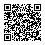
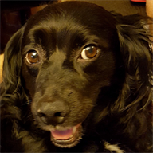

Distance and time travelled
Saved rides
Switch a ride off to leave it out of the trail network.
No rides yet. Go to Ride and press START RIDE.
Waypoints
No pins dropped yet.
Old-map trails ridden so far
Branches
A branch is a named trail within the system. Names come from your existing map where a stretch follows one of its trails. To name or rename a stretch, open Trail segments below and tap its Name button.
Trail segments
Tap a segment to see it on the map; tap Name to give it a branch name. Segments with the same name make up one branch.
Width is a rough guide: the width of the widest thing that has travelled the segment, plus how far apart the passes ran once GPS error is allowed for. A phone's GPS is only good to a few metres, so an ordinary trail shows as that width alone ("GPS-limited") and only wide stretches read wider. More passes make it firmer.
Contributors
Scavenger hunt
Finished hunts
You
Friends and sharing
On the map now
Share this app
Friends can scan this with their phone's camera, on Android or iPhone, to open the app and install it. Their rides stay on their own phone.

GPS recording
Methods of travel
You pick one each time you press START RIDE. Each pass counts as a strip this wide, centred on the phone, and the distance is added to that method's total under Saved rides. To change it for a saved ride, use its Method button.
Existing trail map
Google Earth export
Backup
App

- Never press the power button during a ride: phones stop giving GPS to web apps the moment the screen is really off, or another app is in front. Use DARK SCREEN instead: it looks off and is safe in a pocket, but keeps recording.
- iPhone: if GPS shows as blocked or stays weak, open the iPhone's Settings > Privacy & Security > Location Services > Safari Websites, choose While Using the App and turn on Precise Location. If the screen still dims during a ride, set Display & Brightness > Auto-Lock to Never while riding.
- Wait for the GPS number at the top to turn green before you set off.
- Everything is stored on this phone only. Save a backup file now and then.
- To combine rides from two phones, save a backup file on one and use Restore on the other. Each ride keeps the name of whoever recorded it.
- The app looks for a newer version every time it opens with a signal, and installs it by itself.